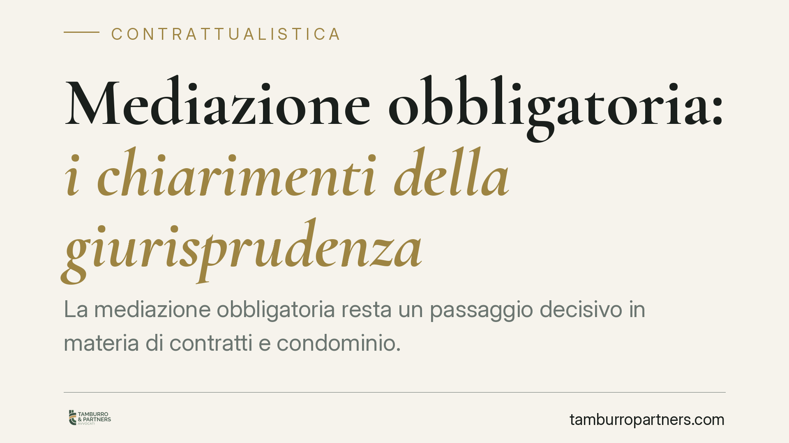

Mediazione obbligatoria: i chiarimenti della giurisprudenza
La mediazione obbligatoria resta un passaggio decisivo in materia di contratti e condominio. Capire chi deve attivarla, entro quando si rileva la sua mancanza e come incide sul decreto ingiuntivo evita di vedere la causa dichiarata improcedibile. Facciamo il punto sul quadro vigente, aggiornato alla riforma Cartabia, e sui principi affermati dalla Cassazione.

Il quadro normativo vigente (post riforma Cartabia)
Questo contributo si riferisce al D.lgs. 28/2010 come modificato dal D.lgs. 149/2022 (riforma Cartabia), applicabile ai procedimenti instaurati a partire dalla sua entrata in vigore.
L'art. 5 elenca le materie in cui la mediazione è condizione di procedibilità della domanda: tra queste, per quanto qui interessa, rientrano le controversie in materia di condominio e numerose ipotesi contrattuali (ad esempio locazione, comodato, contratti bancari e assicurativi). "Condizione di procedibilità" significa che il giudice non può decidere nel merito se prima le parti non hanno tentato la mediazione.
Il rilievo dell'improcedibilità è disciplinato dall'art. 5: l'eccezione del convenuto o il rilievo d'ufficio del giudice devono intervenire non oltre la prima udienza. Superata questa soglia, il vizio si considera sanato. La riforma ha rimodulato la numerazione e il contenuto dei commi dell'art. 5 rispetto al testo previgente: è dunque opportuno verificare la collocazione esatta delle regole sul caso concreto, evitando di fare affidamento su richiami alla vecchia formulazione.
Accanto alla mediazione legale (art. 5), il decreto prevede la mediazione da clausola contrattuale o statutaria (art. 5-sexies): quando le parti hanno inserito in contratto una clausola che impone il previo tentativo di mediazione, il giudice, su eccezione di parte proposta nei termini, assegna un termine per esperirlo.
Mediazione e decreto ingiuntivo: il principio delle Sezioni Unite
Il nodo più ricorrente riguarda l'opposizione a decreto ingiuntivo nelle materie soggette a mediazione obbligatoria.
Sul punto resta centrale Cass., Sezioni Unite, n. 19596/2020: l'onere di attivare la procedura di mediazione, a pena di improcedibilità, grava sul creditore opposto (cioè su chi ha ottenuto il decreto), non sull'opponente. Se la mediazione non viene promossa, la conseguenza è la revoca del decreto ingiuntivo.
È un principio rilevante perché ribalta l'intuizione comune: chi ha già un titolo monitorio potrebbe credere di dover solo attendere, ma è proprio su di lui che pesa l'iniziativa.
Quanto alla fase anteriore – la domanda di ingiunzione – la disciplina del rapporto tra procedimento monitorio e mediazione va letta nel testo oggi vigente: nella fase di emissione del decreto l'obbligo non opera, e la verifica della condizione di procedibilità si colloca nella successiva fase di opposizione. Anche qui consigliamo di controllare la precisa collocazione della regola nel testo riformato prima di impostare la strategia.
Clausola contrattuale e via monitoria
Quando il contratto contiene una clausola di mediazione, la sua operatività in sede monitoria segue le regole dell'art. 5-sexies, con dinamiche proprie rispetto alla mediazione legale. In assenza di una pronuncia che fissi un orientamento univoco, è prudente non dare per scontato che la clausola "blocchi" automaticamente l'azione monitoria: la parte interessata deve eccepirne il rispetto nei termini di legge, altrimenti rischia la sanatoria del vizio.
Spese della mediazione e condotta delle parti
La riforma ha rafforzato il rilievo della condotta delle parti nel procedimento di mediazione. La mancata partecipazione senza giustificato motivo può essere valutata dal giudice ai fini della decisione e produrre conseguenze sul piano delle spese. Partecipare in modo effettivo, e non meramente formale, non è quindi un passaggio neutro.
Cosa fare in concreto
Per il creditore con decreto ingiuntivo opposto:
- Attiva tu la mediazione una volta proposta l'opposizione, senza attendere l'iniziativa altrui: l'onere è a tuo carico.
- Deposita l'istanza presso un organismo competente prima della prima udienza, per non incorrere nell'improcedibilità.
Per l'amministratore di condominio:
- Verifica la presenza di una delibera assembleare che autorizzi a partecipare o a formulare proposte in mediazione, quando richiesta dalle regole del tuo ente.
- Non limitarti alla presenza formale: una partecipazione inconsistente può riflettersi sulle spese.
Per entrambi:
- Controlla quale versione del D.lgs. 28/2010 si applica al tuo procedimento in base alla data di instaurazione (ratione temporis).
- Se esiste una clausola contrattuale di mediazione, valuta tempestivamente se e come eccepirla: il termine per farlo è ristretto.
Le regole illustrate sono generali e non sostituiscono la valutazione del singolo rapporto, che dipende da materia, tempistiche e contenuto degli atti.
---
*Contributo informativo a cura di Tamburro & Partners – Avv. Giuseppe Tamburro. Non costituisce parere legale.*
Ogni contratto ha il suo equilibrio.
Se vuoi una revisione delle clausole o una redazione su misura, scrivi allo studio. Ti rispondiamo entro un giorno lavorativo.